How2Use "HICTOP CR-10"
動作確認（初期整備）
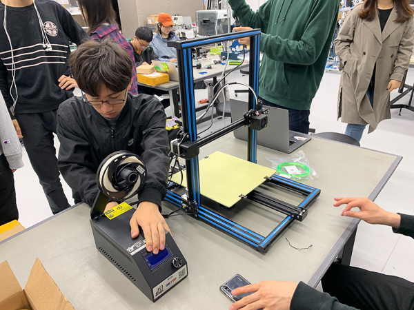
電源が入って3Dプリンターが起動したのを確認したら、コントロールボックスからの操作で
- Prepare→Disable SteppersよりX、Y、Z軸へヘッドを動かし、配線が正しいか確認する。
- Prepare→Auto Homeでヘッドを原点に戻す。
- Prepare→Move Axisで各軸・エクストルーダーを稼働させ、正常に動作しているかを確認する。
異音や異臭、モーターの異常な動作があった場合直ちに電源を落とし、ケーブル類が正しく接続するか確認する。
水平出し（平行調整）

土台（ベッド）とヘッドの水平と距離を取るために、ヘッドを動かしながら土台下部のノブを回し調節する。
適切な距離は名刺が土台とヘッドの間を、抵抗を感じながらも通る事が出来る程度。
- Prepare→auto levelingを選択し、左下のダイヤルで調節する。その後、 Next Stepを押すごとに四隅を巡り、最後に中央へ移動する。
- 中央の土台・ヘッド間に調整が必要だった場合、Prepare→Disable Steppersより手動でヘッドを動かし、必要な箇所を再調整する。
土台とヘッド間の適正距離は、名刺程度の厚さが適している。後にスティックのり等でコーティングする時、厚塗りし過ぎないよう注意。
データ作成
STL Finderにて好みのオブジェクトを探す。
スライサーをダウンロード。Unimaker Cura（以降Curaと呼称）を使った。
ファイルのアイコンからファイルを選択（対応ファイルは以下の通り）
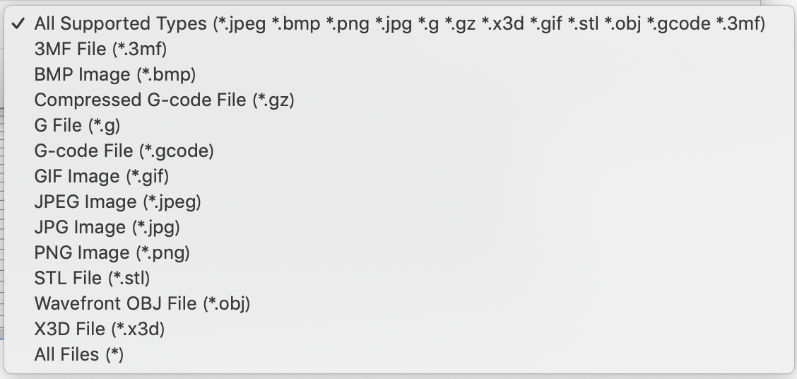
オブジェクトが読み込まれたら、角度の調整と台座上のプリント場所を決める。角度は、接地面積が最大になるよう配置するか、
下から覗いて赤くなった部分（非接地の底面は赤くなる）がなるべく少なくなるように配置すると安定する。
ただ、接地部分はどうしても表面がぺったんこになるのでそれを嫌うなら、完成させた時に置くつもりの角度と同じ角度で配置するといい。
角度と、大まかなサイズの調整が終わったらSliceボタンをクリックしてスライス。
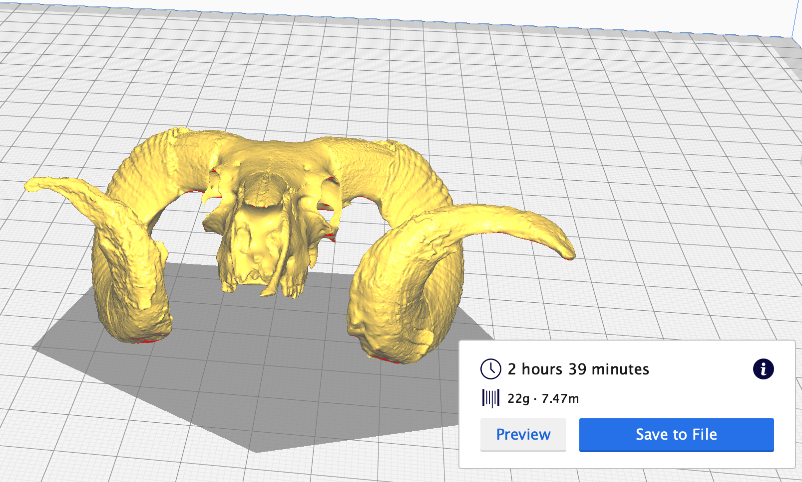
時計の横がプリントに掛かる予定の時間。previewでプリント手順と完成予想図が確認できる。
大きさにこだわりが無ければ、プリント時間を目安にサイズを調整しなおすと完成時間を早められる。
なお、時間の下の数値はおそらく使用するフィラメントの量と長さだ。
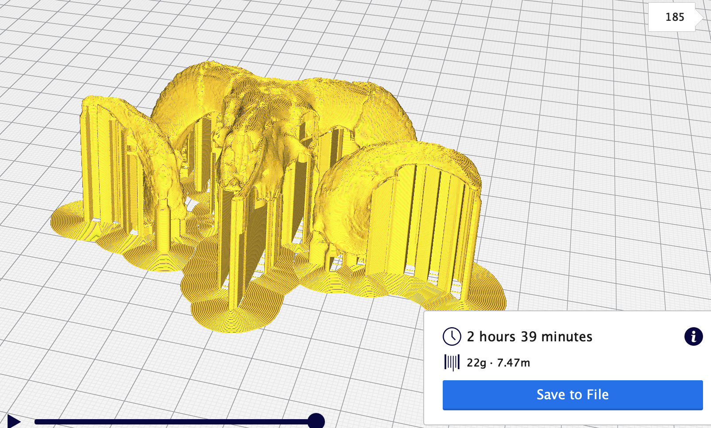
垂れているように見える部分はサポートで、設置部分以外の足場の役割を果たす。
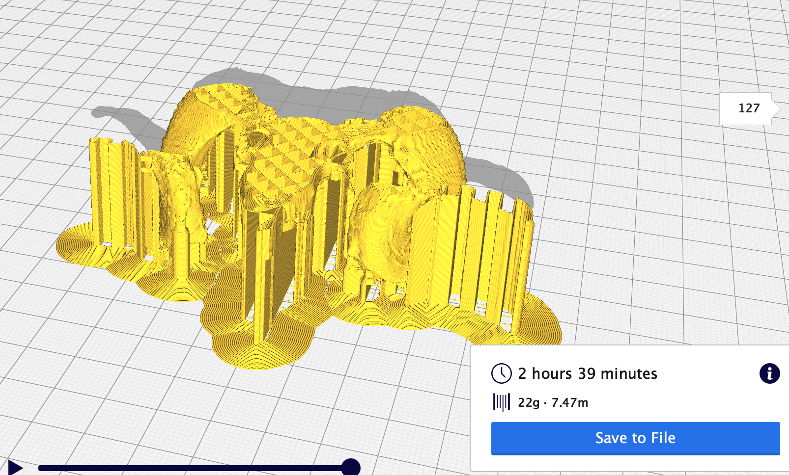
右のバーを動かすと階層が
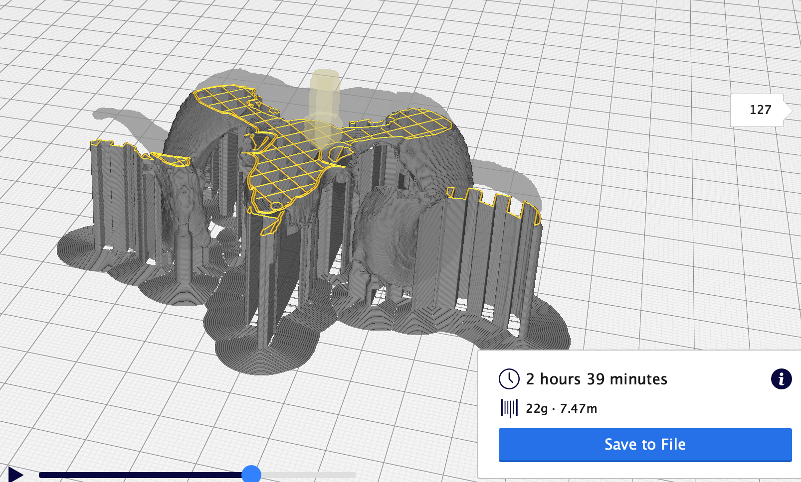
下のバーで印刷経路がそれぞれ確認できる。
満足のいくプリントが出来そうなら、Save to FileでmicroSDカードに保存する。拡張子は.gcode(=Gコード)。
プリント
土台のプラットフォームシート確認、フィラメントの取り付け・残量確認と、必要なら水平出しが済んだらmicroSDを3Dプリンターに突っ込んでプリント開始。
- Prepare→Print from SD→自分が保存したgcodeファイルを選択
- ノズルが加熱される間に、プラットフォームシートの上の印刷予定場所にスティックのり等を塗布する。
- 待つ。
失敗してチリチリな何かが出来る可能性があるので、出来るだけ複数オブジェクトの同時プリントは避け、定期的にプリント中の3Dプリンターを確認するといい。
スライスについて
性質を掴む一助となる事を願って。
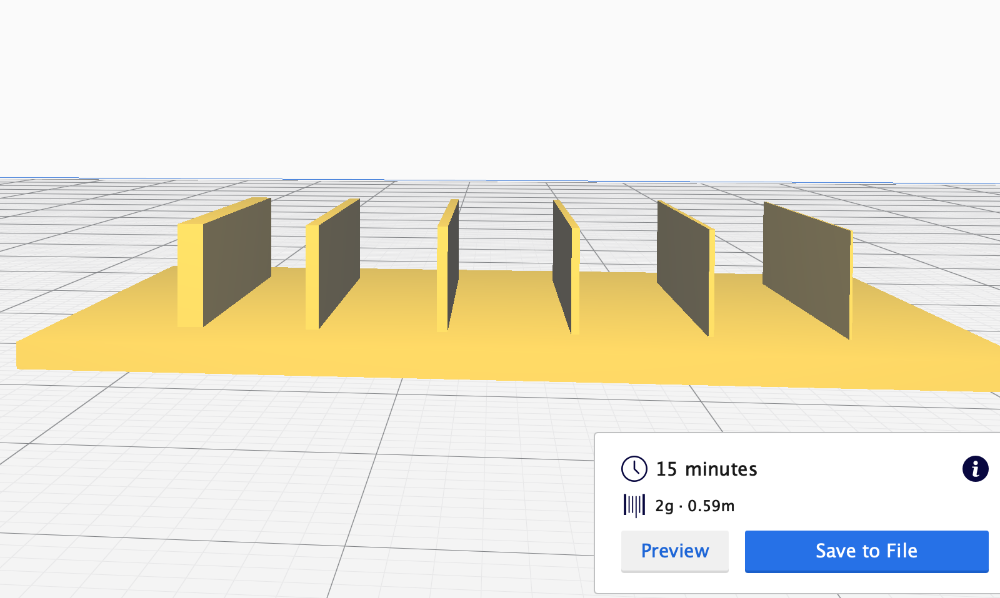
左から幅1mm、0.5mm、0.4mm、0.3mm、0.2mm、0.1mm。
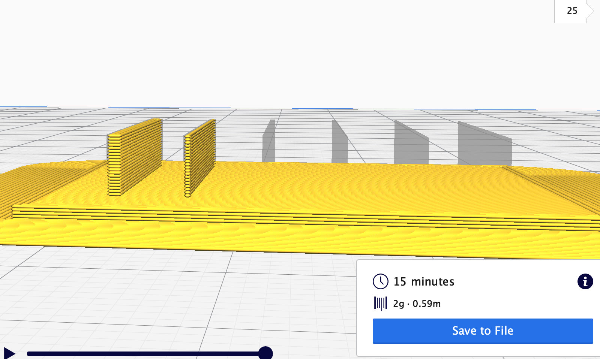
出力出来る限界は幅0.5mmのようだ。それ以下だと容赦無く切り捨てられる。
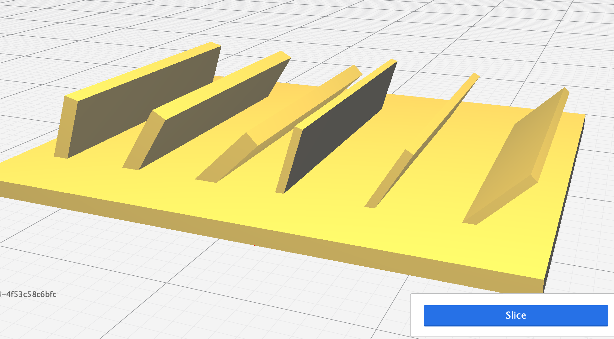
左３つが幅1mm、右３つが幅0.5mm。それぞれ左から15°、30°、45°。
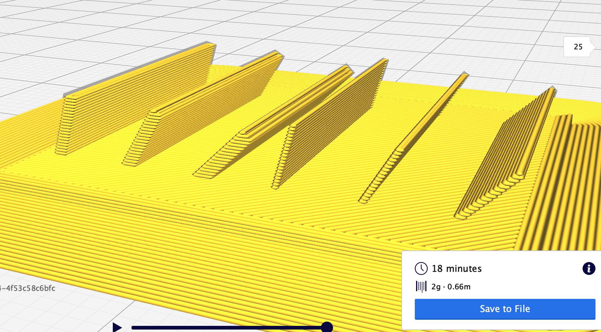
驚いた事に、0.5mmの45°すらサポート無しで形成出来るらしい。この様子だと角度が付けば薄いオブジェクトも作れるかも知れない。
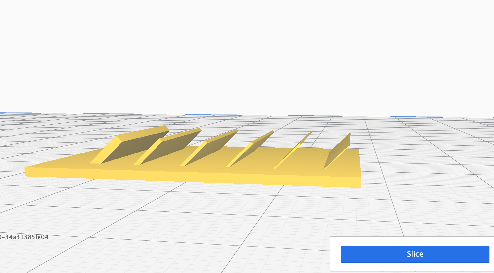
最初と同じで左から幅1mm、0.5mm、0.4mm、0.3mm、0.2mm、0.1mm。
全ての角度を45°にして再度スライス。
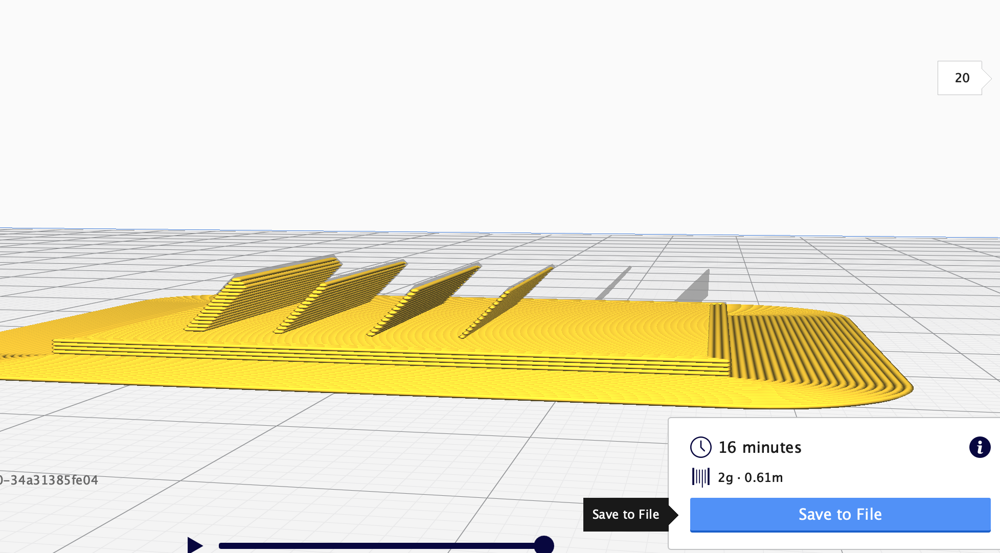
角度45°にすれば厚さ0.3mmまで形成出来る事が分かった。薄い部分があるオブジェクトを形成する時は、傾けるといいかも知れない。強度は保証しかねるが。
成果物
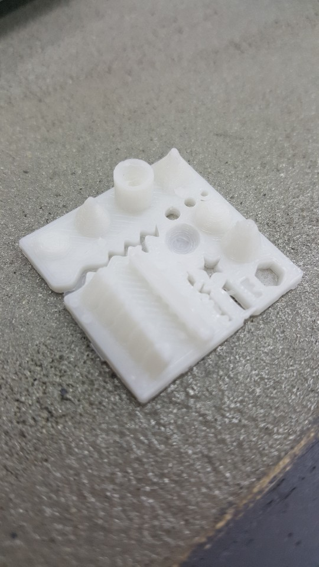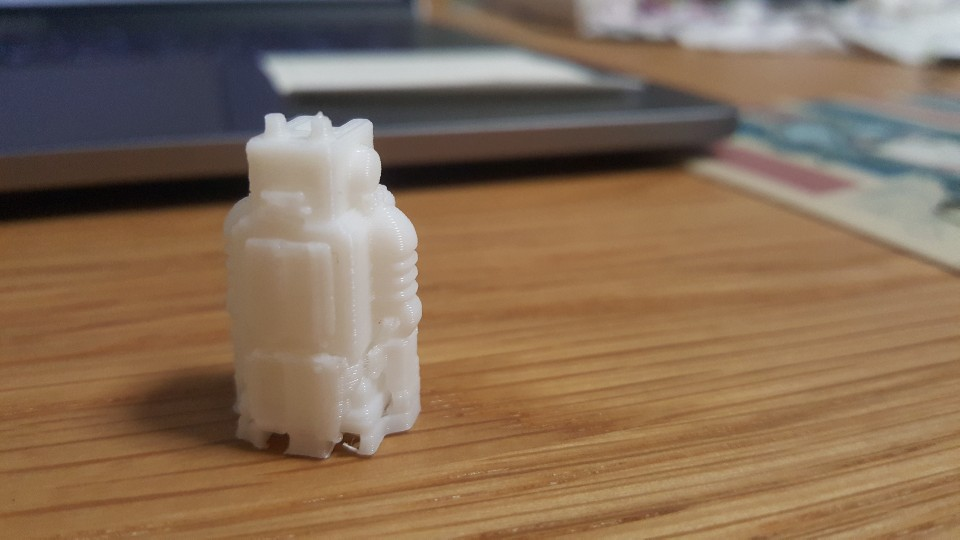
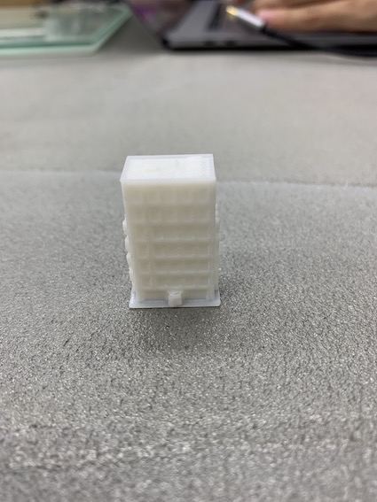